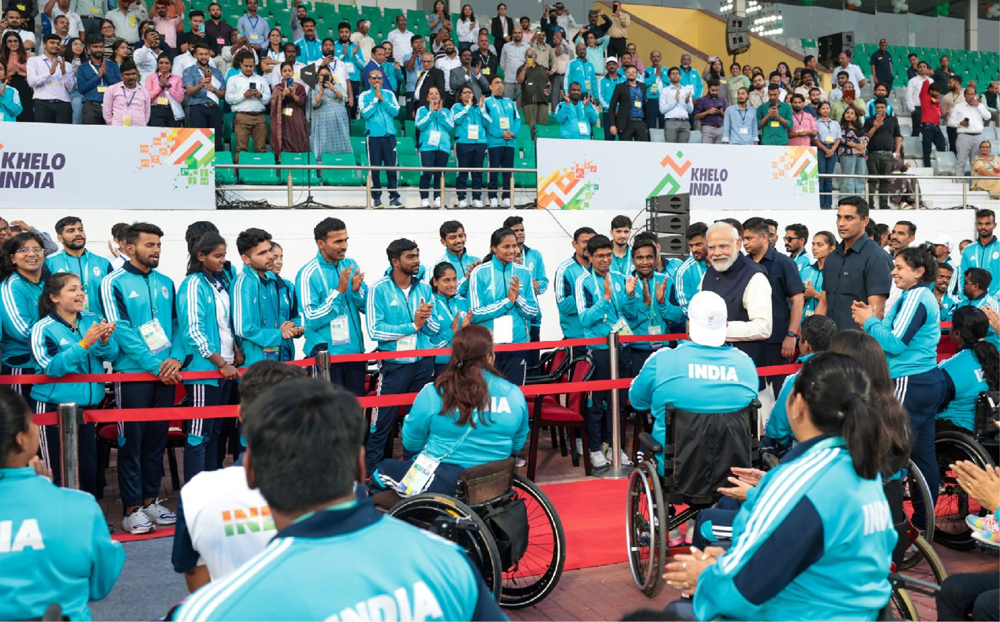
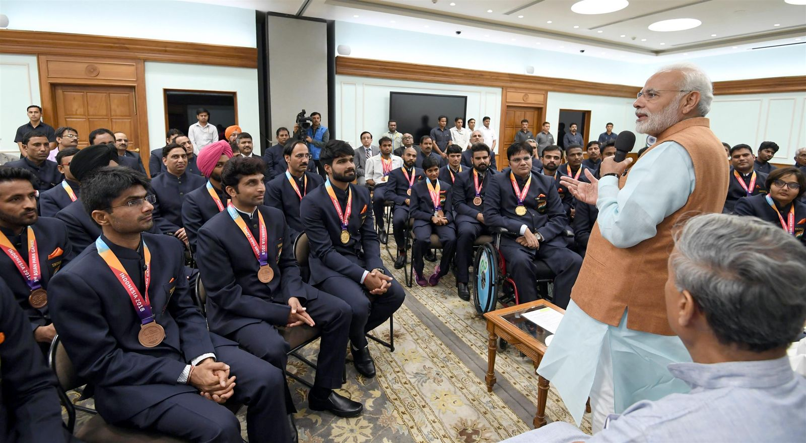

Chess for the blind and visually impaired
Chess
I have played chess for India since 2013, at the Asian Para Games, IBCA world championships and the FIDE Chess Olympiad for People with Disability. I also co-founded the Odisha Chess Association for the Visually Challenged to grow the game in my home state.
- 3 Asian Para Games medals
- 1 World team gold
- 4 National and zonal tournament wins
International results
- 2023 Gold B1 Men Rapid Team, 4th Asian Para Games, Hangzhou, China
- 2023 Silver B1 Men Rapid Individual, 4th Asian Para Games, Hangzhou, China
- 2023 Team Represented India, 1st FIDE Chess Olympiad for People with Disability, Belgrade, Serbia
- 2022 Gold Board 2, World Team Chess Championship for the Blind, Ohrid, North Macedonia
- 2020 5.5 / 6 Unbeaten for India, 1st FIDE Online Olympiad for People with Disability
- 2018 Silver B2/B3 Men Rapid Team, 3rd Asian Para Games, Jakarta, Indonesia
- 2018 Silver 10th IBCA World Junior Championship, Poland
- 2018 Team Represented India, World Team Chess Championship for the Blind, Bulgaria
- 2017 Bronze IBCA Asia Pacific Championship, Manipal, India
- 2017 6th Board 2, IBCA Chess Olympiad for the Visually Challenged, Macedonia
- 2015 7th World Junior Chess Championship for the Blind, Podgorica, Montenegro
- 2014 Played 13th IBCA World Individual Championship, Katerini, Greece
- 2013 12th World Junior Chess Championship for the Blind, Belgrade, Serbia
- 2013 Team Represented India, 7th World Blind Team Chess Championship, Zaragoza, Spain
National results
- 2023 3rd National Chess Championship for the Visually Challenged, Mumbai
- 2022 Champion National Chess Championship for the Visually Challenged, Pune
- 2022 Champion East Zone Chess Championship for the Blind, Malda, West Bengal
- 2019 Runner-up All India PCSS Open FIDE Rated Tournament, Raipur
- 2018 3rd National ‘B’ Chess Championship for the Blind, Bhuj, Gujarat
- 2017 3rd National ‘A’ Chess Championship for the Blind, Mumbai
- 2015 Champion National ‘B’ Chess Championship for the Blind, Manipal, Karnataka
- 2015 Runner-up FIDE Rated Chess Tournament for the Blind, Nagercoil, Tamil Nadu
- 2014 3rd National ‘A’ Chess Championship for the Blind, Vasai, Maharashtra
- 2013 Runner-up National Open FIDE Rated Tournament for the Blind, Nabadwip, West Bengal
- 2012 Champion All-India FIDE Rating Tournament for the Blind, Hyderabad
- 2012 Runner-up East Zone Chess Championship for the Blind, Bhubaneswar
At NIT Jamshedpur
- Most Valuable Player at URJA 2020, the institute sports festival.
- Team gold at URJA 2020, representing Computer Science and Engineering.
- Represented NIT Jamshedpur at the Inter-NIT Chess Tournament, NIT Jaipur, 2019.
Recognition
- Felicitated by Prime Minister Narendra Modi after the Asian Para Games, in 2018 and again in 2023.
- Shared a UNICEF panel on International Children’s Day 2018 with Sachin Tendulkar.
- Addressed members of the Indian Parliament on disability in UNICEF’s “Children Takeover” programme, 2017.
- Named Player of the Year 2017 at the 6th Sports-logon awards, Bhubaneswar.
- Odisha State Award 2013 for individual excellence, presented by the Chief Minister of Odisha.
Photos



Press coverage
- Prime Minister of India, 2023: PM congratulates Darpan Inani, Soundarya Pradhan and Ashwin for winning gold in chess at the Asian Para Games
- ChessBase India, 2023: India wins eight medals at the 4th Asian Para Games
- ANI, 2023: Asian Para Games medalist Soundarya Pradhan receives warm welcome in Bhubaneswar
- OdishaTV, 2023: Odisha chess star Soundarya Pradhan wins gold and silver
- OrissaPOST, 2023: Odia chess player Soundarya Kumar Pradhan wins individual silver, group gold at Asian Para Games
- ChessBase India, 2022: Soundarya Pradhan's website for blind chess players
- ChessBase India, 2018: Soundarya Pradhan creates history by winning silver at World Juniors 2018
- ChessBase India: My brother is a hero: a true story of overcoming adversities and never giving up
- Sportskeeda: “Disability is not a curse, but a challenge”
- Wikipedia: Soundarya Pradhan